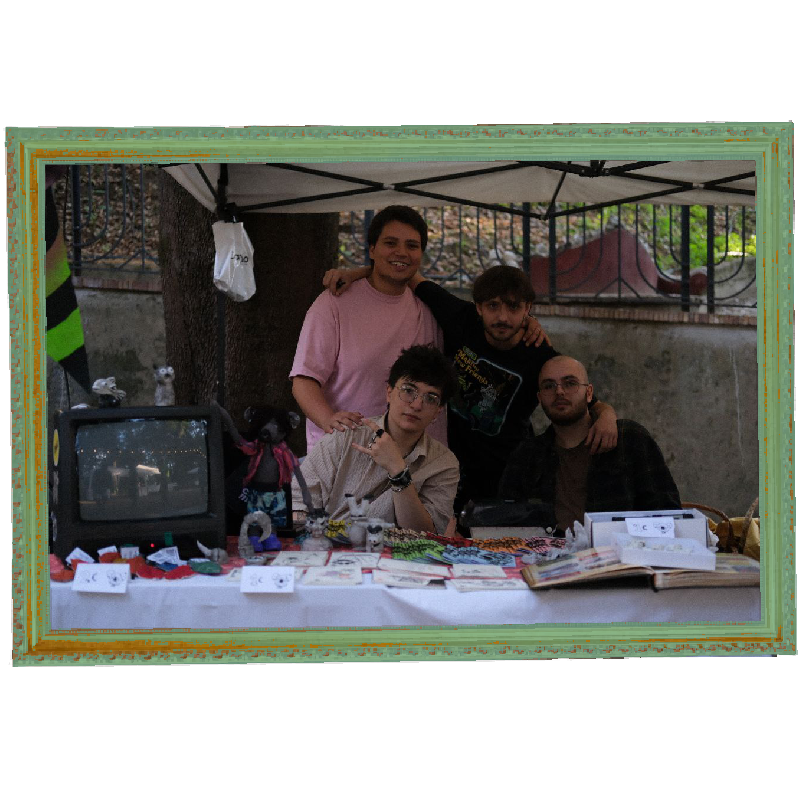
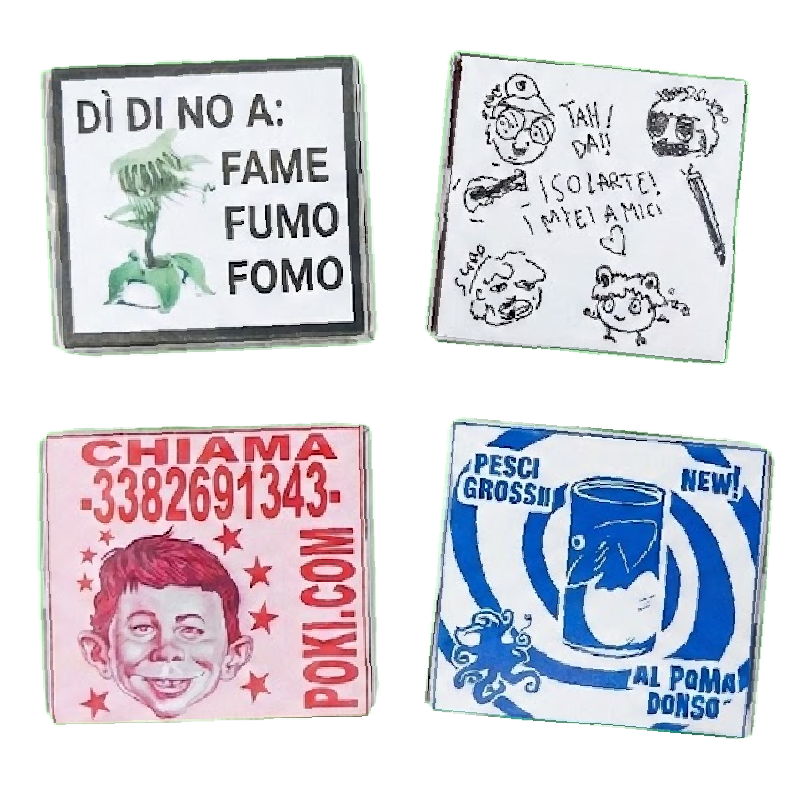
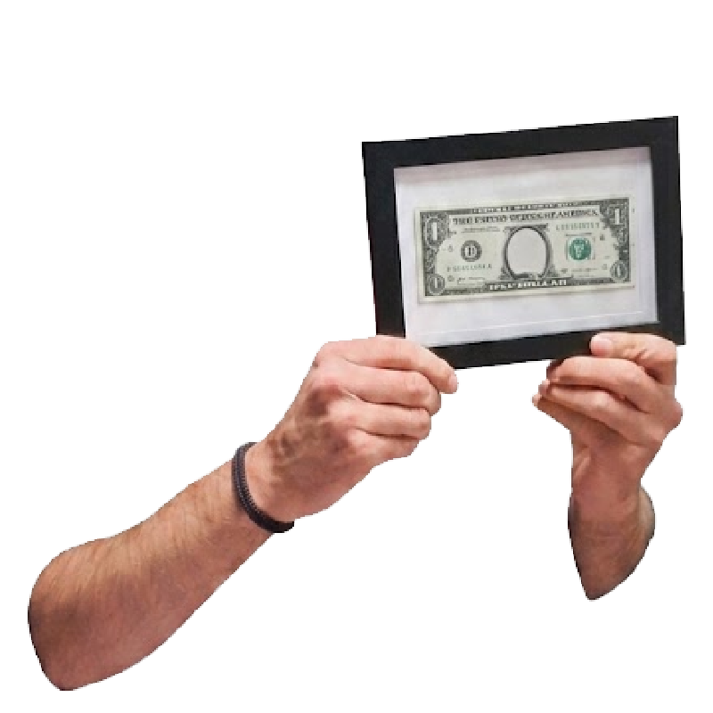

Isolarte è un progetto multiculturale e multimediale che si svolge prettamente sul territorio per diffondere cultura, arte e informazione in modo libero, accogliendo chi non ha la possibilità di diffondere le proprie creazioni o è troppo timid* per farlo.
Tutti gli artisti del collettivo sono disponibili per illustrazioni, cover art, grafiche editoriali, merchandising ed eventi su misura. Esplora i loro lavori e contattali direttamente.
Clicca su un profilo per visualizzare le opere o richiedere una commissione personalizzata.
Illustrazione digitale, character design, cover art e poster underground.
Tratto grezzo, fumetto indie, cartoline punk e reinterpretazioni di Isotopo.
Disegno figurativo, bozzetti su carta, character styling e sketch art.
Pixel art, game design, atmosfere retro-futuristiche e sound visual.
La rete di Isolarte conta oltre 20 creativi tra illustratori, grafici e autori in costante espansione.
Tutto si svolge su Isolarte, la terra degli artisti. Ogni location è uno step che l'artista deve raggiungere per arrivare alla creazione di un'opera: dal Vulcano delle Idee al Tempio dell'Attesa, passando per la Foresta dei Pensieri e Artopolis.
Ogni artista arriva su Isolarte un po' per caso, per poi decidere se rimanere o andare via.


Riprendiamo il concetto storico di fanzine per unire l'informazione libera all'esplorazione narrativa dell'isola. La lore si sviluppa sia nell'edizione cartacea distribuita sul territorio, sia nei contenuti digitali su Instagram.
Il giornaletto è e sarà sempre gratuito per rimanere accessibile a chiunque. Per sostenere le stampe realizziamo merchandising a basso costo e spirito punk: spille, cartoline, portachiavi, collane e t-shirt.
Dalle presenze dal vivo con banchetti autogestiti alle produzioni d'arte indipendenti e videogiochi.

Portiamo l'arte direttamente tra le persone con i nostri banchetti dal vivo: distribuiamo gratuitamente le copie cartacee della Journal-Zine e sosteniamo le produzioni indipendenti con poster esclusivi, merchandising d'autore, portachiavi, cartoline e spille realizzate dagli artisti del collettivo.
Uno spazio di incontro reale per parlare di autoproduzione, scambiare idee e far circolare la cultura senza intermediari.
Ogni artista dell'isola reinterpreta la mascotte Isotopo secondo il proprio linguaggio visivo, tecnica e supporto.

Un'esplorazione sul supporto tascabile: i residenti del collettivo hanno reinterpretato il concept della pubblicità su scatole di fiammiferi. Dalle campagne sociali contro il fumo fino all'assurdo (vendita di pomodori e pesce-pomodoro), arrivando alla promozione web e all'autopromozione di Isolarte stessa, dove gli illustratori finiscono ritratti all'interno della grafica.

Un quadro scultoreo realizzato da una nostra illustratrice che pone al centro una riflessione sul valore e sull'identità. La moneta dipinta custodisce al suo esatto centro un piccolo specchio: chi osserva l'opera e il valore monetario ci trova riflesso il proprio stesso sguardo.
Esperienza interattiva creata da Isolarte per la band Hunos in occasione dell'uscita del loro ultimo album "America".
Fai clic per caricare il gioco direttamente nella pagina, oppure aprilo su Itch.io a schermo intero.